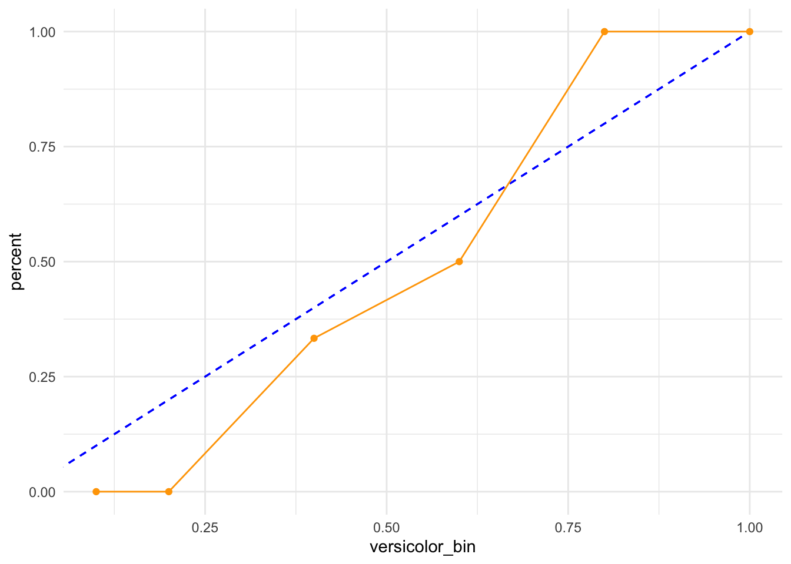

set.seed(100)
iris_split <- initial_split(iris, prop = 1/3)
iris_split<Training/Testing/Total>
<50/100/150>set.seed(100)
iris_split <- initial_split(iris, prop = 1/3)
iris_split<Training/Testing/Total>
<50/100/150>model <- ranger(Species ~ ., data = training(iris_split), probability = TRUE)preds <- predict(model, testing(iris_split))
tbl_iris <- testing(iris_split) %>%
bind_cols(preds$predictions) %>%
mutate(
versicolor_bin = case_when(
versicolor >= 0 & versicolor <= 0.1 ~ 0.1,
versicolor <= 0.2 ~ 0.2,
versicolor <= 0.3 ~ 0.3,
versicolor <= 0.4 ~ 0.4,
versicolor <= 0.5 ~ 0.5,
versicolor <= 0.6 ~ 0.6,
versicolor <= 0.7 ~ 0.7,
versicolor <= 0.8 ~ 0.8,
versicolor <= 0.9 ~ 0.9,
TRUE ~ 1
),
is_versicolor = ifelse(Species == "versicolor", 1, 0)
)
tbl_iris Sepal.Length Sepal.Width Petal.Length Petal.Width Species setosa
1 5.1 3.5 1.4 0.2 setosa 1.000000000
2 4.7 3.2 1.3 0.2 setosa 1.000000000
3 5.0 3.6 1.4 0.2 setosa 1.000000000
4 5.4 3.9 1.7 0.4 setosa 0.965333333
5 5.0 3.4 1.5 0.2 setosa 1.000000000
6 4.9 3.1 1.5 0.1 setosa 0.999000000
7 5.4 3.7 1.5 0.2 setosa 0.959333333
8 4.8 3.4 1.6 0.2 setosa 1.000000000
9 4.8 3.0 1.4 0.1 setosa 0.996500000
10 5.8 4.0 1.2 0.2 setosa 0.910400000
11 5.4 3.9 1.3 0.4 setosa 0.965333333
12 5.1 3.5 1.4 0.3 setosa 1.000000000
13 5.7 3.8 1.7 0.3 setosa 0.900685714
14 5.4 3.4 1.7 0.2 setosa 0.957333333
15 5.1 3.7 1.5 0.4 setosa 1.000000000
16 4.6 3.6 1.0 0.2 setosa 1.000000000
17 5.0 3.0 1.6 0.2 setosa 0.996500000
18 5.0 3.4 1.6 0.4 setosa 1.000000000
19 5.2 3.5 1.5 0.2 setosa 1.000000000
20 5.2 4.1 1.5 0.1 setosa 1.000000000
21 5.5 4.2 1.4 0.2 setosa 0.928285714
22 4.9 3.1 1.5 0.2 setosa 0.999000000
23 5.0 3.2 1.2 0.2 setosa 1.000000000
24 5.5 3.5 1.3 0.2 setosa 0.888285714
25 4.9 3.6 1.4 0.1 setosa 1.000000000
26 4.4 3.0 1.3 0.2 setosa 0.996500000
27 5.1 3.4 1.5 0.2 setosa 1.000000000
28 4.5 2.3 1.3 0.3 setosa 0.995166667
29 5.0 3.5 1.6 0.6 setosa 1.000000000
30 4.8 3.0 1.4 0.3 setosa 0.996500000
31 5.1 3.8 1.6 0.2 setosa 1.000000000
32 5.3 3.7 1.5 0.2 setosa 0.988000000
33 5.0 3.3 1.4 0.2 setosa 1.000000000
34 6.4 3.2 4.5 1.5 versicolor 0.004400000
35 6.9 3.1 4.9 1.5 versicolor 0.000000000
36 5.7 2.8 4.5 1.3 versicolor 0.003352381
37 6.3 3.3 4.7 1.6 versicolor 0.010400000
38 4.9 2.4 3.3 1.0 versicolor 0.185166667
39 6.6 2.9 4.6 1.3 versicolor 0.000400000
40 5.2 2.7 3.9 1.4 versicolor 0.175166667
41 5.0 2.0 3.5 1.0 versicolor 0.185166667
42 5.9 3.0 4.2 1.5 versicolor 0.000400000
43 6.1 2.9 4.7 1.4 versicolor 0.000400000
44 5.6 3.0 4.5 1.5 versicolor 0.002685714
45 6.2 2.2 4.5 1.5 versicolor 0.000400000
46 5.9 3.2 4.8 1.8 versicolor 0.002400000
47 6.1 2.8 4.0 1.3 versicolor 0.000400000
48 6.3 2.5 4.9 1.5 versicolor 0.000000000
49 6.1 2.8 4.7 1.2 versicolor 0.000400000
50 6.4 2.9 4.3 1.3 versicolor 0.000400000
51 6.6 3.0 4.4 1.4 versicolor 0.000400000
52 6.8 2.8 4.8 1.4 versicolor 0.000400000
53 6.0 2.9 4.5 1.5 versicolor 0.000400000
54 5.7 2.6 3.5 1.0 versicolor 0.003352381
55 5.5 2.4 3.8 1.1 versicolor 0.014952381
56 5.5 2.4 3.7 1.0 versicolor 0.014952381
57 5.8 2.7 3.9 1.2 versicolor 0.000400000
58 6.0 2.7 5.1 1.6 versicolor 0.000000000
59 6.0 3.4 4.5 1.6 versicolor 0.020400000
60 6.3 2.3 4.4 1.3 versicolor 0.000400000
61 5.6 3.0 4.1 1.3 versicolor 0.002685714
62 5.5 2.5 4.0 1.3 versicolor 0.014952381
63 5.0 2.3 3.3 1.0 versicolor 0.185166667
64 5.7 3.0 4.2 1.2 versicolor 0.004685714
65 5.1 2.5 3.0 1.1 versicolor 0.193166667
66 5.7 2.8 4.1 1.3 versicolor 0.003352381
67 6.3 3.3 6.0 2.5 virginica 0.000000000
68 7.1 3.0 5.9 2.1 virginica 0.000000000
69 6.3 2.9 5.6 1.8 virginica 0.000000000
70 7.6 3.0 6.6 2.1 virginica 0.000000000
71 4.9 2.5 4.5 1.7 virginica 0.175166667
72 7.3 2.9 6.3 1.8 virginica 0.000000000
73 6.7 2.5 5.8 1.8 virginica 0.000000000
74 7.2 3.6 6.1 2.5 virginica 0.000000000
75 6.5 3.2 5.1 2.0 virginica 0.000000000
76 5.7 2.5 5.0 2.0 virginica 0.000952381
77 5.8 2.8 5.1 2.4 virginica 0.000000000
78 6.5 3.0 5.5 1.8 virginica 0.000000000
79 7.7 3.8 6.7 2.2 virginica 0.000000000
80 7.7 2.6 6.9 2.3 virginica 0.000000000
81 5.6 2.8 4.9 2.0 virginica 0.000952381
82 7.7 2.8 6.7 2.0 virginica 0.000000000
83 6.7 3.3 5.7 2.1 virginica 0.000000000
84 6.2 2.8 4.8 1.8 virginica 0.000400000
85 6.1 3.0 4.9 1.8 virginica 0.000000000
86 6.4 2.8 5.6 2.1 virginica 0.000000000
87 7.2 3.0 5.8 1.6 virginica 0.000000000
88 7.4 2.8 6.1 1.9 virginica 0.000000000
89 7.9 3.8 6.4 2.0 virginica 0.000000000
90 6.4 2.8 5.6 2.2 virginica 0.000000000
91 6.3 2.8 5.1 1.5 virginica 0.000000000
92 7.7 3.0 6.1 2.3 virginica 0.000000000
93 6.4 3.1 5.5 1.8 virginica 0.000000000
94 6.0 3.0 4.8 1.8 virginica 0.000400000
95 6.7 3.1 5.6 2.4 virginica 0.000000000
96 6.8 3.2 5.9 2.3 virginica 0.000000000
97 6.7 3.3 5.7 2.5 virginica 0.000000000
98 6.3 2.5 5.0 1.9 virginica 0.000000000
99 6.5 3.0 5.2 2.0 virginica 0.000000000
100 6.2 3.4 5.4 2.3 virginica 0.000000000
versicolor virginica versicolor_bin is_versicolor
1 0.000000000 0.000000000 0.1 0
2 0.000000000 0.000000000 0.1 0
3 0.000000000 0.000000000 0.1 0
4 0.034666667 0.000000000 0.1 0
5 0.000000000 0.000000000 0.1 0
6 0.001000000 0.000000000 0.1 0
7 0.040666667 0.000000000 0.1 0
8 0.000000000 0.000000000 0.1 0
9 0.003500000 0.000000000 0.1 0
10 0.088528571 0.001071429 0.1 0
11 0.034666667 0.000000000 0.1 0
12 0.000000000 0.000000000 0.1 0
13 0.099314286 0.000000000 0.1 0
14 0.042666667 0.000000000 0.1 0
15 0.000000000 0.000000000 0.1 0
16 0.000000000 0.000000000 0.1 0
17 0.003500000 0.000000000 0.1 0
18 0.000000000 0.000000000 0.1 0
19 0.000000000 0.000000000 0.1 0
20 0.000000000 0.000000000 0.1 0
21 0.071714286 0.000000000 0.1 0
22 0.001000000 0.000000000 0.1 0
23 0.000000000 0.000000000 0.1 0
24 0.111714286 0.000000000 0.2 0
25 0.000000000 0.000000000 0.1 0
26 0.003500000 0.000000000 0.1 0
27 0.000000000 0.000000000 0.1 0
28 0.004833333 0.000000000 0.1 0
29 0.000000000 0.000000000 0.1 0
30 0.003500000 0.000000000 0.1 0
31 0.000000000 0.000000000 0.1 0
32 0.012000000 0.000000000 0.1 0
33 0.000000000 0.000000000 0.1 0
34 0.934455556 0.061144444 1.0 1
35 0.520577778 0.479422222 0.6 1
36 0.992603175 0.004044444 1.0 1
37 0.928455556 0.061144444 1.0 1
38 0.784173016 0.030660317 0.8 1
39 0.987962698 0.011637302 1.0 1
40 0.799533333 0.025300000 0.8 1
41 0.748973016 0.065860317 0.8 1
42 0.946403175 0.053196825 1.0 1
43 0.966611111 0.032988889 1.0 1
44 0.960346825 0.036967460 1.0 1
45 0.847269048 0.152330952 0.9 1
46 0.500041270 0.497558730 0.6 1
47 0.983029365 0.016570635 1.0 1
48 0.487613492 0.512386508 0.5 1
49 0.982029365 0.017570635 1.0 1
50 0.986362698 0.013237302 1.0 1
51 0.972350000 0.027250000 1.0 1
52 0.928149206 0.071450794 1.0 1
53 0.943423810 0.056176190 1.0 1
54 0.969848413 0.026799206 1.0 1
55 0.945637302 0.039410317 1.0 1
56 0.945637302 0.039410317 1.0 1
57 0.985161111 0.014438889 1.0 1
58 0.337097619 0.662902381 0.4 1
59 0.915415079 0.064184921 1.0 1
60 0.927096032 0.072503968 1.0 1
61 0.990464286 0.006850000 1.0 1
62 0.959803968 0.025243651 1.0 1
63 0.770373016 0.044460317 0.8 1
64 0.988242063 0.007072222 1.0 1
65 0.785673016 0.021160317 0.8 1
66 0.992603175 0.004044444 1.0 1
67 0.003563492 0.996436508 0.1 0
68 0.010157143 0.989842857 0.1 0
69 0.006413492 0.993586508 0.1 0
70 0.010157143 0.989842857 0.1 0
71 0.691401587 0.133431746 0.7 0
72 0.012034921 0.987965079 0.1 0
73 0.010490476 0.989509524 0.1 0
74 0.009934921 0.990065079 0.1 0
75 0.012544444 0.987455556 0.1 0
76 0.175491270 0.823556349 0.2 0
77 0.021957937 0.978042063 0.1 0
78 0.009135714 0.990864286 0.1 0
79 0.009934921 0.990065079 0.1 0
80 0.011034921 0.988965079 0.1 0
81 0.213491270 0.785556349 0.3 0
82 0.010034921 0.989965079 0.1 0
83 0.009840476 0.990159524 0.1 0
84 0.503422222 0.496177778 0.6 0
85 0.150452381 0.849547619 0.2 0
86 0.004413492 0.995586508 0.1 0
87 0.301716667 0.698283333 0.4 0
88 0.012034921 0.987965079 0.1 0
89 0.009934921 0.990065079 0.1 0
90 0.004413492 0.995586508 0.1 0
91 0.353877778 0.646122222 0.4 0
92 0.010157143 0.989842857 0.1 0
93 0.005563492 0.994436508 0.1 0
94 0.504857937 0.494742063 0.6 0
95 0.009840476 0.990159524 0.1 0
96 0.008001587 0.991998413 0.1 0
97 0.009840476 0.990159524 0.1 0
98 0.130713492 0.869286508 0.2 0
99 0.007135714 0.992864286 0.1 0
100 0.005063492 0.994936508 0.1 0iris_bins <- tbl_iris %>%
group_by(versicolor_bin) %>%
summarise(
versicolors = sum(is_versicolor),
total = n()
) %>%
mutate(percent = versicolors / total) %>%
filter(total > 1)
iris_bins# A tibble: 6 × 4
versicolor_bin versicolors total percent
<dbl> <dbl> <int> <dbl>
1 0.1 0 57 0
2 0.2 0 4 0
3 0.4 1 3 0.333
4 0.6 2 4 0.5
5 0.8 5 5 1
6 1 23 23 1 iris_bins %>%
ggplot(aes(versicolor_bin, percent)) +
geom_segment(x = 0, y = 0, xend = 1, yend = 1, linetype = 2, color = "blue") +
geom_line(color = "orange") +
geom_point(color = "orange") +
theme_minimal()